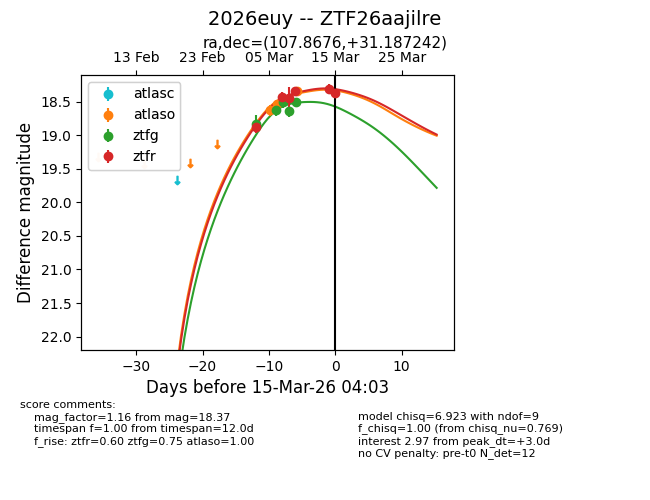
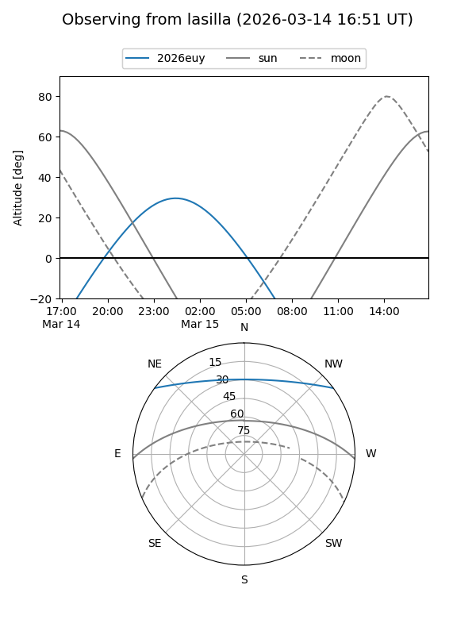
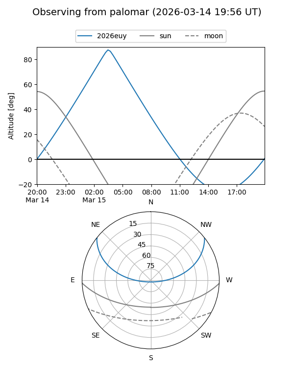
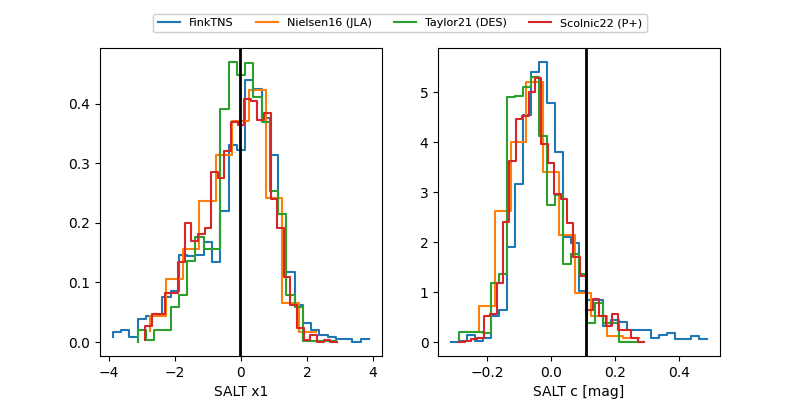

2026euy
Target 2026euy at 2026-03-15 04:05
Aliases and brokers:
FINK: link
Lasair: link
ALeRCE: link
TNS: link
YSE: link
alt names
ZTF26aajilre (ztf,fink_ztf)
2026euy (tns,yse)
Coordinates:
equatorial (ra, dec) = 107.8676,+31.18724
equatorial (HMS+DMS) = 07:11:28.24,+31:11:14.07
galactic (l, b) = (186.3288,+17.61327)
Flags:
Photometry:
last atlaso=18.34, ztfg=18.51, ztfr=18.37
3 atlaso, 5 ztfg, 6 ztfr detections
Lightcurve

Visibility


Additional plots
